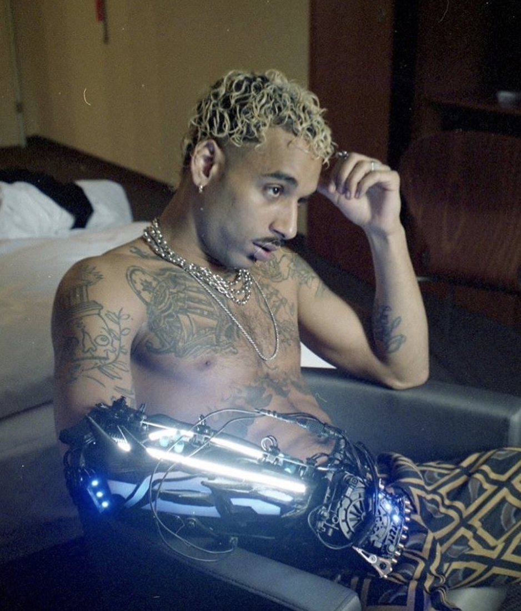
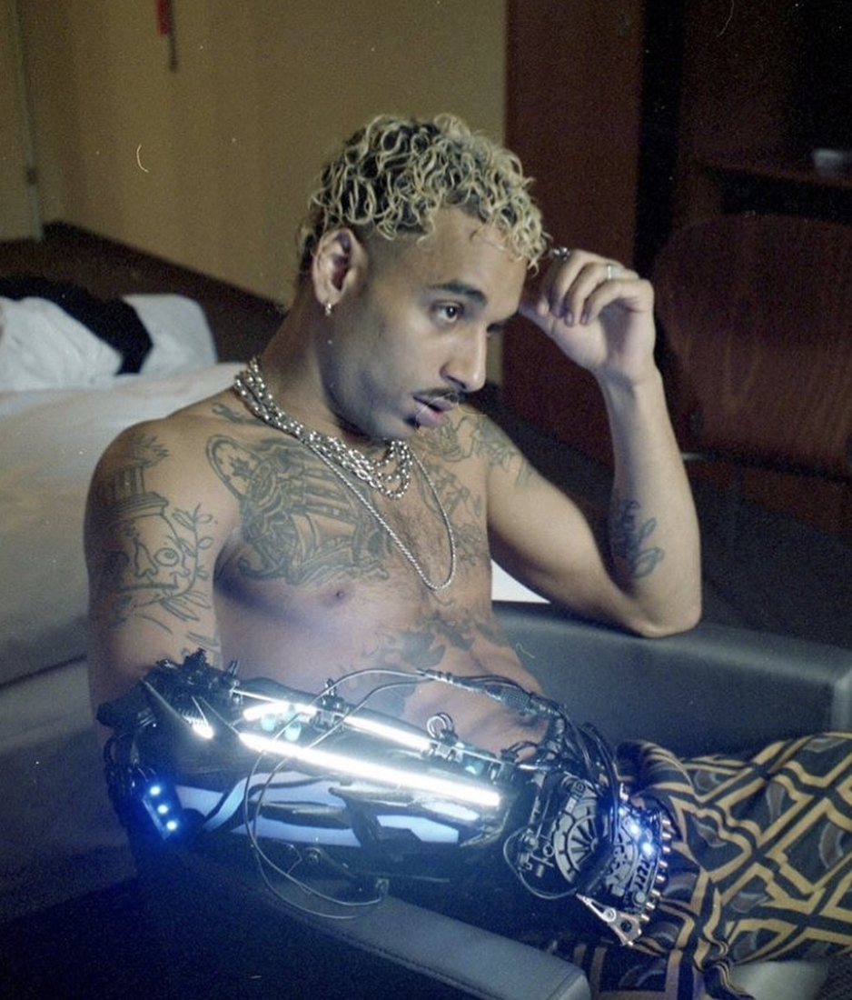
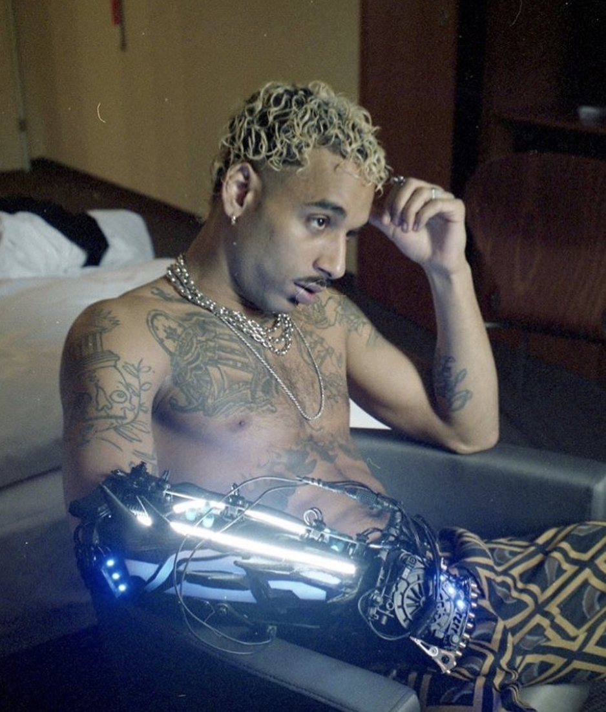
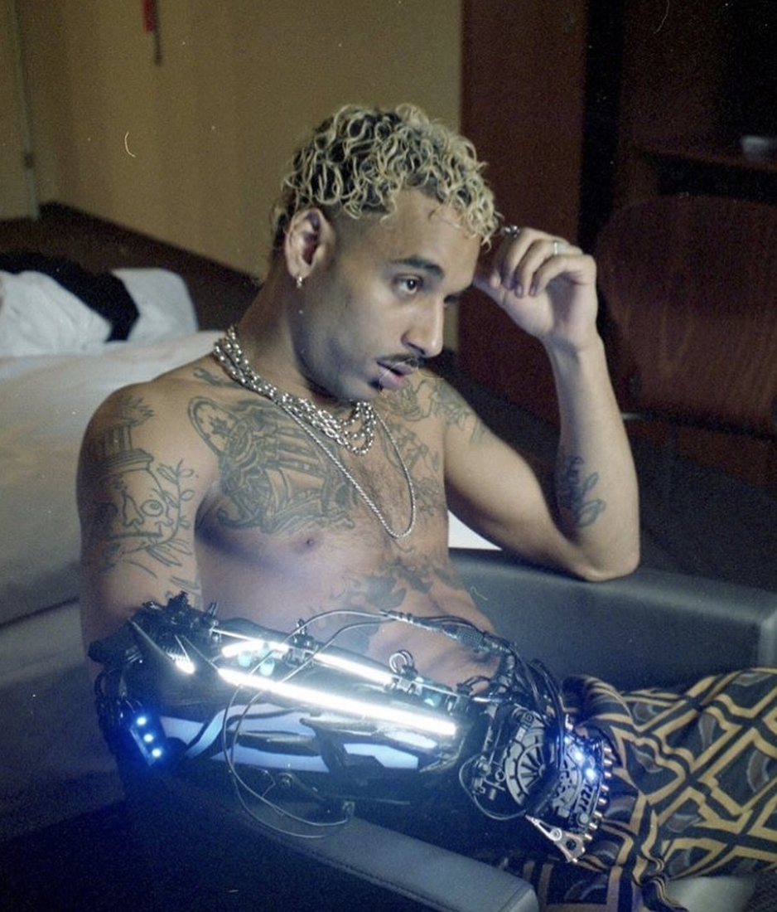

Né en 1993, Laylow est un rappeur français originaire de Plaisance-du-Touch en banlieue de Toulouse, et aujourd’hui installé à Paris. Il est également producteur sous le nom de Mr. Anderson.
Il vit en France avec son père jusqu’à l’âge de neuf ans, puis part en Tunisie pendant deux ans, avant de rejoindre ensuite sa mère à Abidjan en Côte d’Ivoire pour deux ans également.
Il passe également une partie de son adolescence dans la ville de Mirande dans le Gers en internat au lycée, où il rencontre son futur manager, puis finit par s’installer à Toulouse.
Malgré l’interdiction de cette dernière, c’est à ce moment vers l’âge de douze ans qu’il se plonge dans le rap et écrit quelques phases par l’intermédiaire de son grand frère qui lui fait découvrir cet art.
Bon élève mais se disant quelque peu turbulent, il est plutôt influencé par des artistes américains tels que Ja Rule ou G-Unit, le côté bling-bling des rappeurs l’impressionne dès son enfance,
le rap français venant à lui un peu plus tard.
Laylow rejoint le montpelliérain Wit. le temps d’un EP commun, Digital Night, sorti en novembre 2015. Un 8 titres avec huit clips où l’on retrouve TBMA à la réalisation,
le début de longues collaborations, aussi bien avec le rappeur que l’équipe de réalisation.